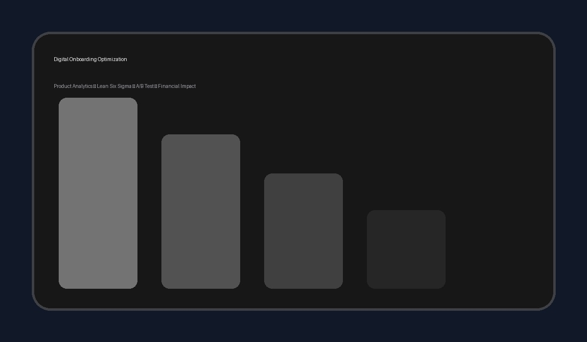

Digital Onboarding Optimization: A Product Analytics & Lean Six Sigma Case Study

Business Context:
- O projeto original foi desenvolvido como parte de uma iniciativa Lean Six Sigma (Yellow Belt), com foco em melhorar a ativação de clientes nos canais digitais.
- O principal problema estava relacionado a atritos no processo de validação de identidade digital e documentos durante a jornada de onboarding.
- A versão pública foi reconstruída com dados sintéticos para preservar a confidencialidade, mantendo a estrutura analítica da análise original.
Analytical Approach:
- Dataset sintético com 100.000 usuários.
- EDA, análise de funil, segmentação, testes estatísticos, A/B Test, impacto financeiro e dashboard.
- Python, Pandas, SQL, Statsmodels, Jupyter Notebook e Streamlit.